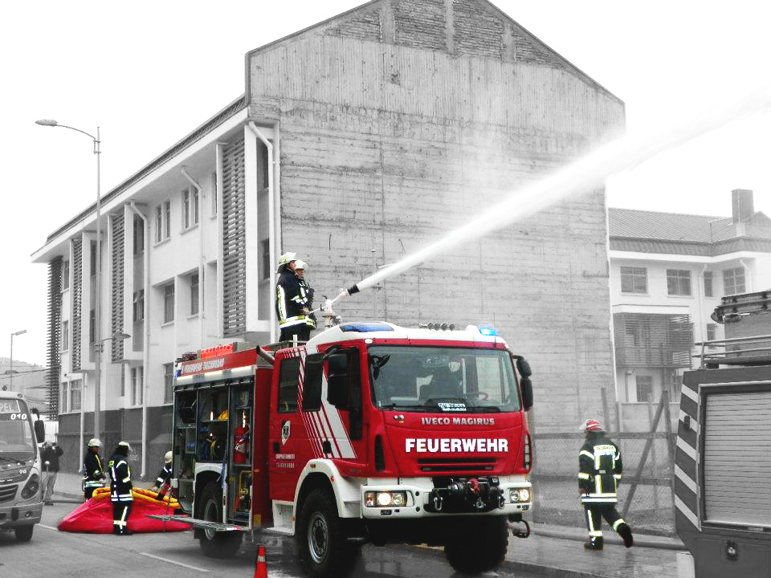
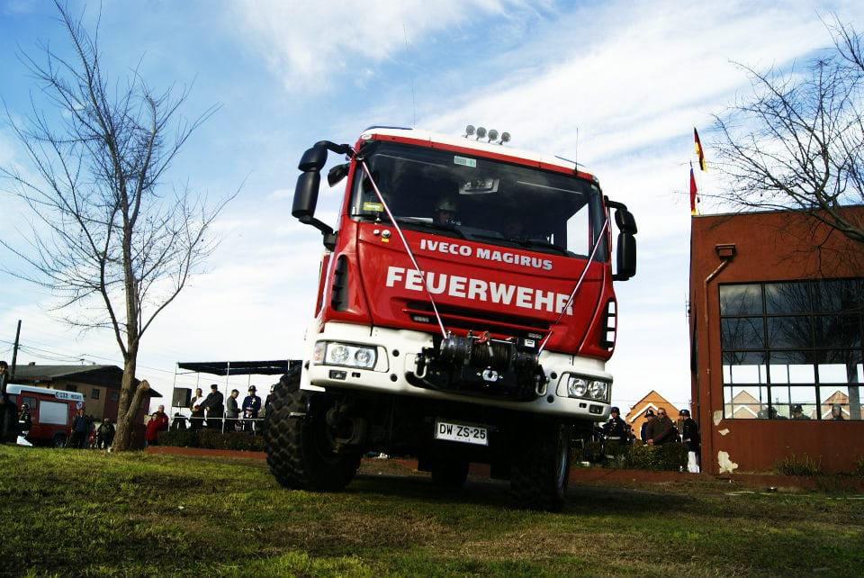
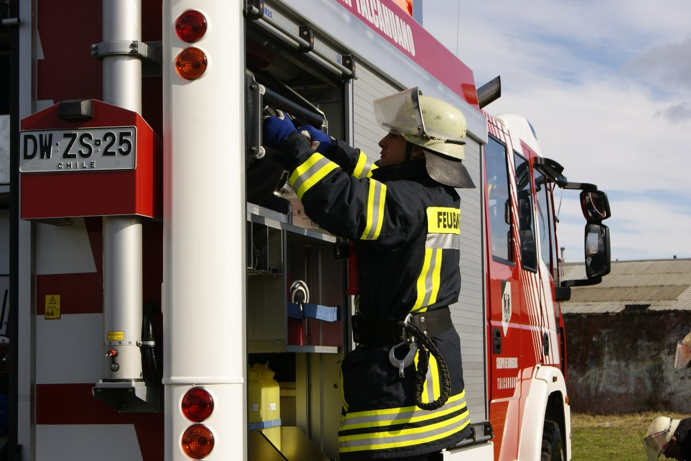
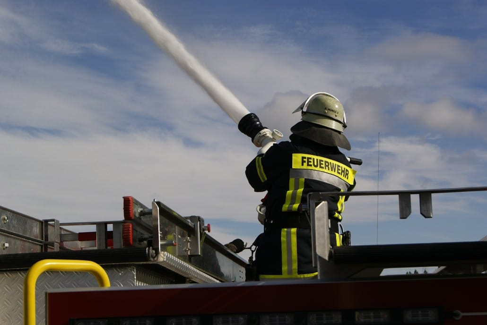
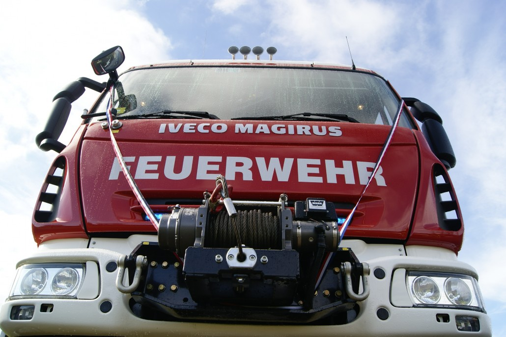

Unidad Iveco Magirus FF150E30W 2012
(BX-5)
Unidad mixta (Incendio – Rescate) con gran capacidad en prestaciones y almacenamiento de equipos.
Descripción de la unidad
– Multipropósito (Incendio – Rescate) con gran capacidad de
almacenamiento de equipos
– Un solo fabricante con prestigio y respaldo técnico
– Mejora en tecnología y seguridad del personal
– Versatilidad, considerando configuración urbana, topografía e
infraestructura vial de Talcahuano
Características de la unidad
– Chasis Iveco FF150E30W, Euro 5, Cabina 1+8, configuración AF3.
– 6 cilindros, Diesel.
– Turbocargado e interenfriado.
– 299 Caballos de Fuerza (HP).
– Caja de transmisión Allison 6 Velocidades Automática con retardador.
– Tres circuitos de frenos independientes (ABS).
– Calentador de filtro de combustible.
– Neumáticos Michelín XZL 395-85 R20.
– Sistema de frenado en los dos puentes.
– Tracción permanente en las 4 ruedas. (All Wheel Drive).
– Carrocería MAGIRUS AluFire 3 (H)LF 30/25 con tratamiento
anticorrosión para ambiente salino.
– Bomba Centrífuga Combinada FPN 10-3000 + FPH 40-400 de alta-baja presión (MPH 230 AN) controlada desde cabina.
– Estanque en fibra de vidrio reforzado, 2500 litros de agua.
– Sistema de inductor automático de agua MAGIRUS AWZ.
– Almacenaje de 4 Equipos de Respiración Autónomo, más 4 en cajoneras.
– 6 Compartimientos con apertura lateral cerrados por cortinas de
aluminio, bajo sistema IVECO.
– Cofre en el techo para tablas de inmovilización.
– Sistema de almacenamiento de escalas.
– Huinche eléctrico WARN 5Tons.
– 2 Portamangueras móviles con soporte Barth traseros.
– Pitón monitor portátil agua/espuma ALCO HH 365 (1600 lts/min a 8 BAR) (Distancia chorro 61 metros).
– Mástil de iluminación telescópico, neumático, control remoto de giro y dirección de luminarias.
– Grupo electrógeno ENDRESS ESE845 DGB ES DIN de 8KvA, trifásico.
– Luces Xenón integradas para óptimo desplazamiento en situaciones climáticas adversas.
– Equipamiento de iluminación en cajoneras y compartimientos con
fluorescentes y neon HELLA.
– Dos Balizas TEKLITE 1000W.
– Luces para redirección y advertencia para el tráfico.
– Intercomunicadores Cabina – Bomba – Stand up monitor.